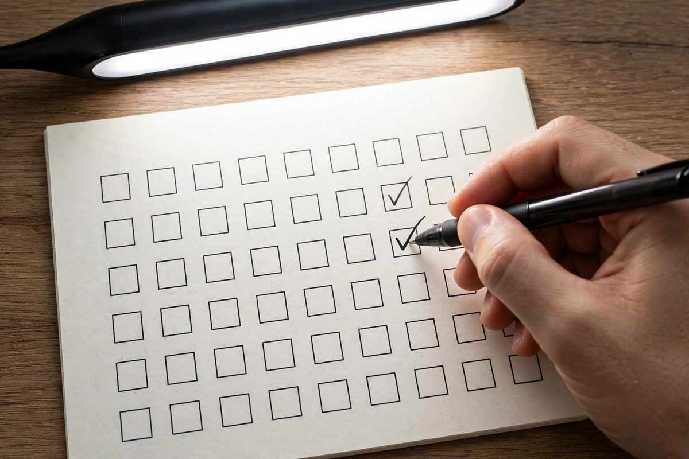
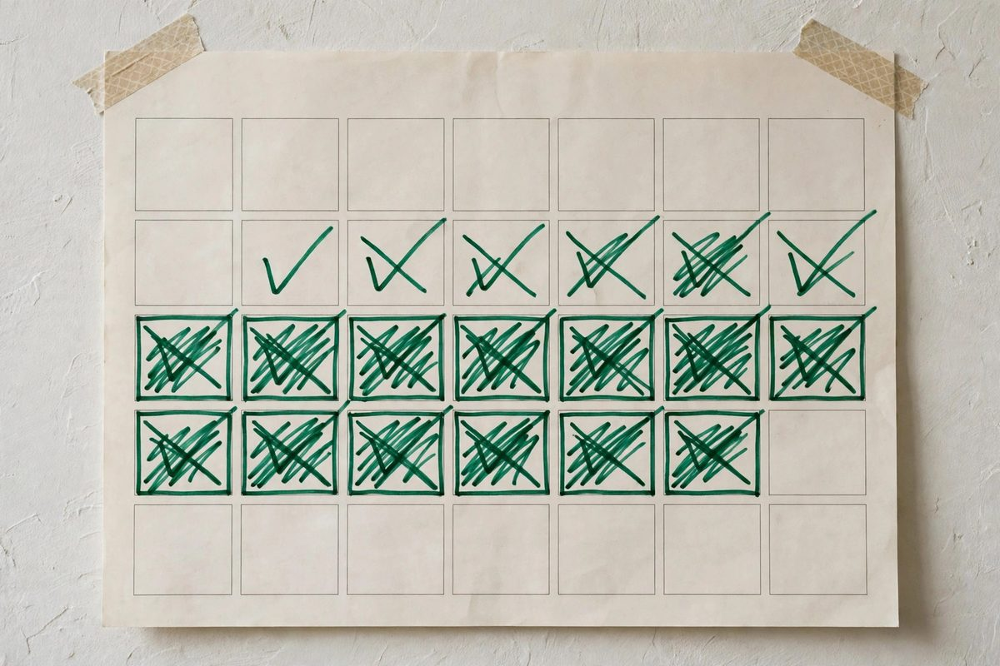
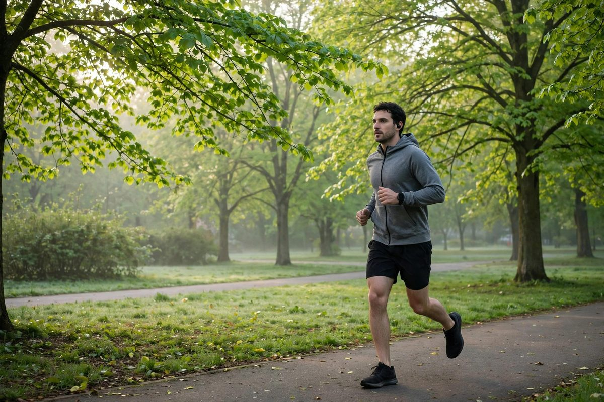
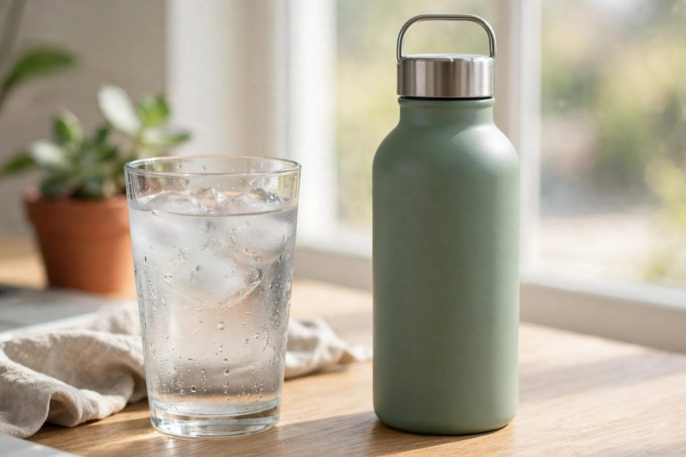
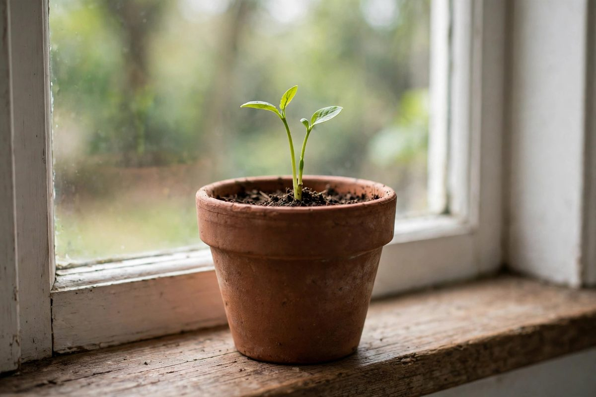
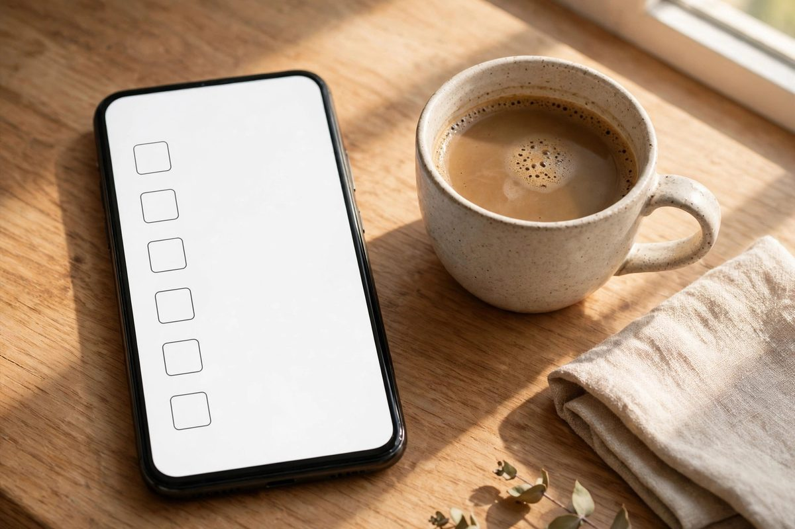
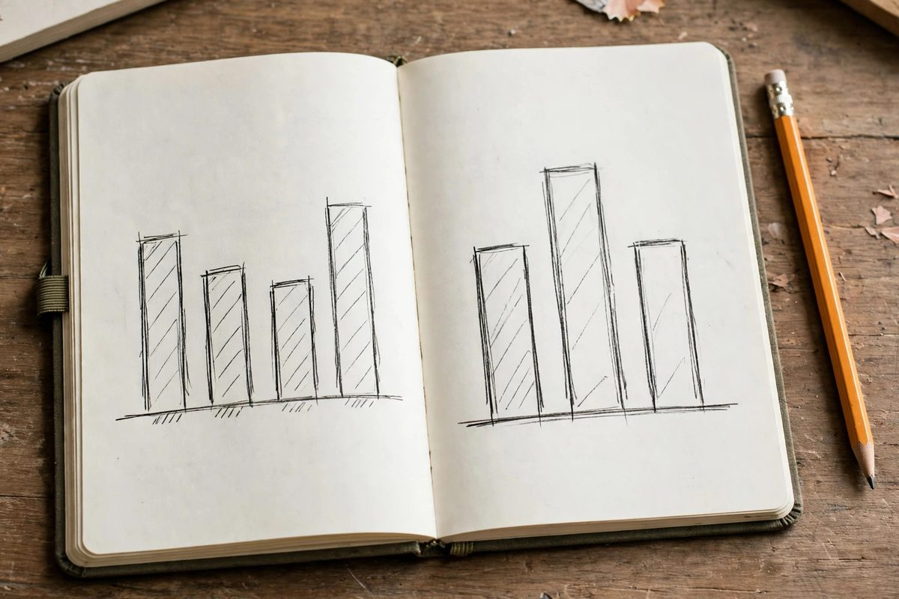
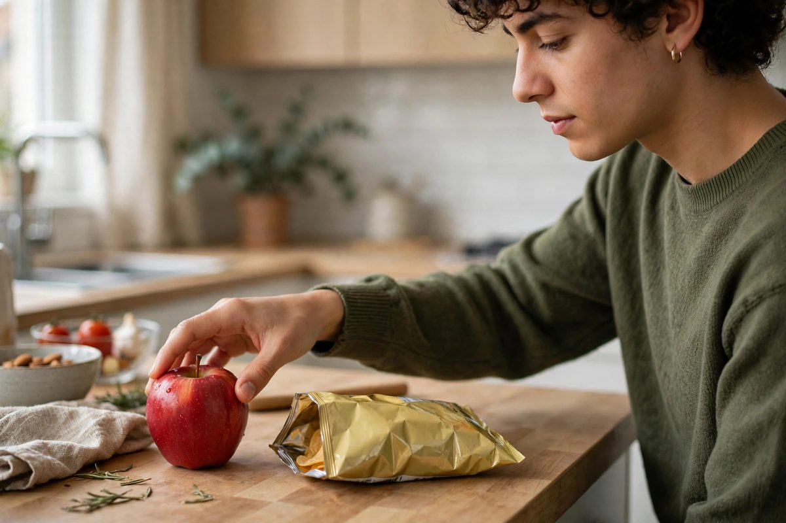
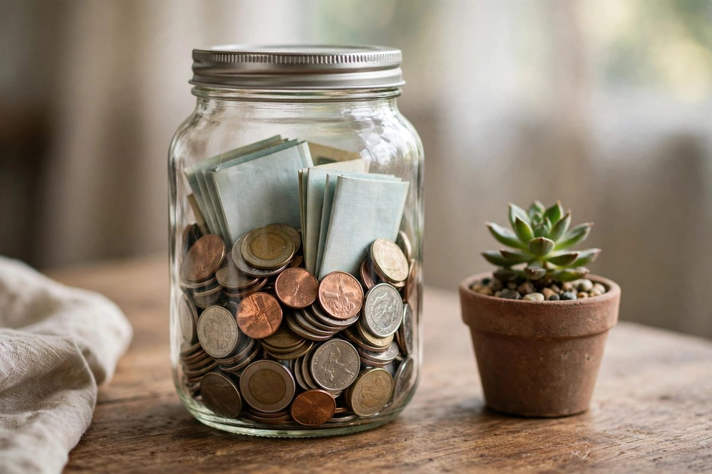
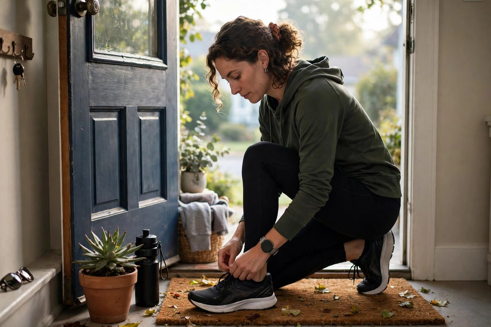

Habit Tracker
Build good habits one day at a time. Track streaks, check in daily and watch your progress grow.
How it works
Habit Tracker is a free, simple tool that works entirely in your browser. Start with our guide on how to start a habit tracker habit streaks explained how to build a morning routine habit tracker for exercise habit tracker for reading habit tracker for drinking water, then open the main tool and try it yourself. Everything is explained in plain language, with worked examples and practical steps you can follow today.
Each tool on this site is free and needs no account. Your data, where a tool stores any, stays on your own device. Read the guides below to learn how to get the most from each tool, avoid common mistakes, and build a routine that lasts.
Our tools
Guides

How to Start a Habit Tracker
Starting a habit tracker is simple: pick one habit, decide what counts as done, and check in every day.

Habit Streaks Explained
A streak is the run of days in a row you have kept a habit going, and it is the number most trackers show first.
How to Build a Morning Routine
A morning routine is a small set of habits done in the same order each morning, before the day gets busy.

Habit Tracker for Exercise
Exercise is one of the most common habits to track, because progress is easy to see week by week.
Habit Tracker for Reading
A reading habit tracker turns a vague wish to read more into a daily check-in you can actually keep.

Habit Tracker for Drinking Water
Drinking enough water is a simple habit, but it is easy to forget without a daily reminder and a check-in.

How Long Does It Take to Form a Habit?
Many people have heard that a habit takes twenty-one days, but the real answer is less tidy and more useful.
Habit Tracker for Sleep
Sleep habits are about regularity: going to bed and waking up at similar times, most nights of the week.
Habit Tracker for Studying
A study habit tracker helps students study a little every day instead of cramming everything at the end.

Daily Check-In Explained
A daily check-in is the moment you record whether you did a habit today, and it is the heart of any tracker.

Habit Statistics Explained
Statistics turn a list of check-ins into a clear picture: how often you did a habit, and when you missed it.
Habit Tracker for Meditation
Meditation is a habit where a short daily session beats a long session done only once in a while.

How to Break a Bad Habit
Breaking a bad habit works better when you replace it with a different action than when you only try to stop.
Habit Tracker for Healthy Eating
Healthy eating is easier to track as one small daily habit than as a strict diet that is hard to keep.
Weekly Habit Review
A weekly review is a short pause to look at the past seven days and plan the next seven honestly.

Habit Tracker for Saving Money
Saving money becomes a habit when you record a small saving action every day or every week.
Habit Tracker for Beginners
If you have never tracked a habit before, start with one habit and one rule, and keep it small.
Habit Tracker Mistakes to Avoid
Habit trackers fail for predictable reasons, and most of them are easy to avoid once you know them.
Habit Tracker for Productivity
Productivity habits are the small daily actions that keep work moving, such as planning the day or clearing the inbox.

How to Stay Consistent With Habits
Consistency is not about willpower alone. It comes from a clear plan, a small step and a system that reminds you.
Frequently asked questions
Is my habit data private?
Yes. Your habits are stored only in your own browser using localStorage. There is no account, no server and nothing is sent anywhere.
Will my data survive if I close the browser?
Yes, localStorage keeps your data on your device until you clear your browser data or use the clear button on a tool page.
How is a streak counted?
A streak is the number of days in a row you checked in a habit, counting back from today or yesterday if today is not checked in yet.
Can I track more than one habit?
Yes. Add as many habits as you like and check each one in separately every day.
Does it work offline?
Yes. Once the page has loaded, the tracker works offline because everything is stored locally.
Can I use it on my phone?
Yes. The tracker is responsive, with large touch-friendly check-in buttons for phones and tablets.